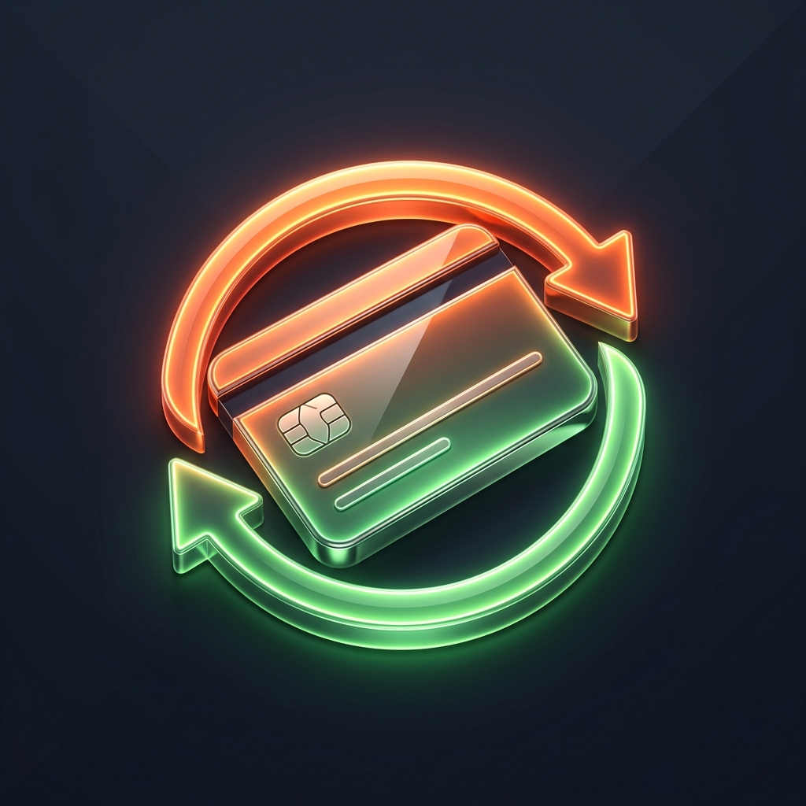

MF to Zaim Syncer
マネーフォワードの月次収支データをZaimにスマートにコピーします。
🔑
Zaim API 認証設定
Zaimにデータを安全に書き込むため、OAuth 1.0a 認証キーを入力してください。
キーはブラウザのローカルストレージ（chrome.storage.local）に暗号化されずに保存され、Zaim APIへの通信時のみ使用されます。
💫
アクセストークン取得アシスタント
Zaim Developersで発行された コンシューマーID と コンシューマーシークレット を上のフォームに入力した状態で、以下の手順に沿ってアクセストークンを簡単に取得できます。
ステップ 1
上のフォームにコンシューマーIDとシークレットを入力後、下のボタンを押してZaimの認証画面を開き、アクセスを許可してください。
ステップ 2
認可完了後、リダイレクトされたブラウザのURLバーから oauth_verifier の値（またはリダイレクト先のURL全体）をコピーして以下に貼り付け、「取得する」ボタンをクリックしてください。
例: http://localhost/?oauth_token=...&oauth_verifier=XXXXXX
⚙️
動作環境設定
Zaimに収支をコピーする際のデフォルトの口座を設定します。